Working objects.
Explanations within reach.
Eleven selected captures from a browser review. Follow each source for the live interaction and its original credits. These images are study evidence, not design assets to import into Jev.
Try the original Jev style study · Research report and licensing notes
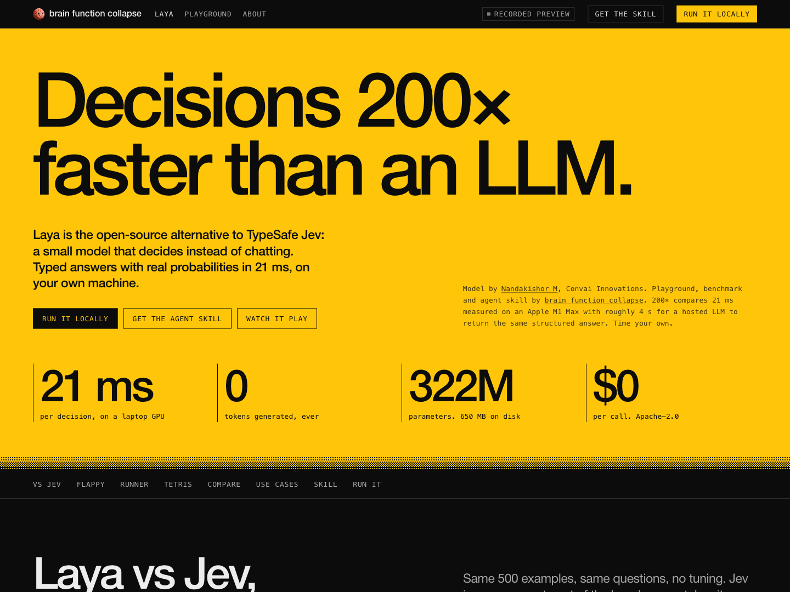
Laya, explained through a scene
Wojciech Dobry · brain function collapseA strong first action and a distinct model attribution. The large speed headline is an author claim, not a Jev result.
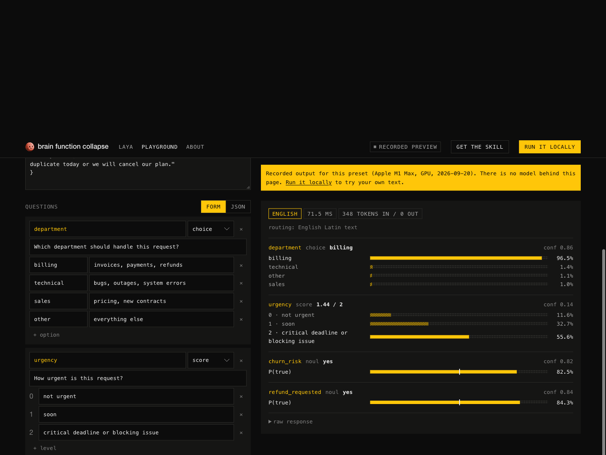
Execution source stays visible
Wojciech Dobry · brain function collapseThe recorded-playback banner and visible distributions establish what the demonstration actually contains.
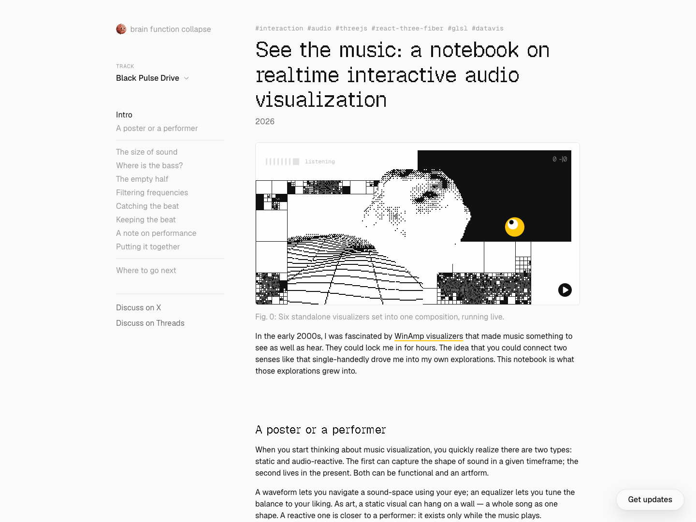
A live figure before the explanation
Wojciech Dobry · brain function collapseA restrained page lets the musical figure carry the introduction. Smaller code-and-effect figures follow.
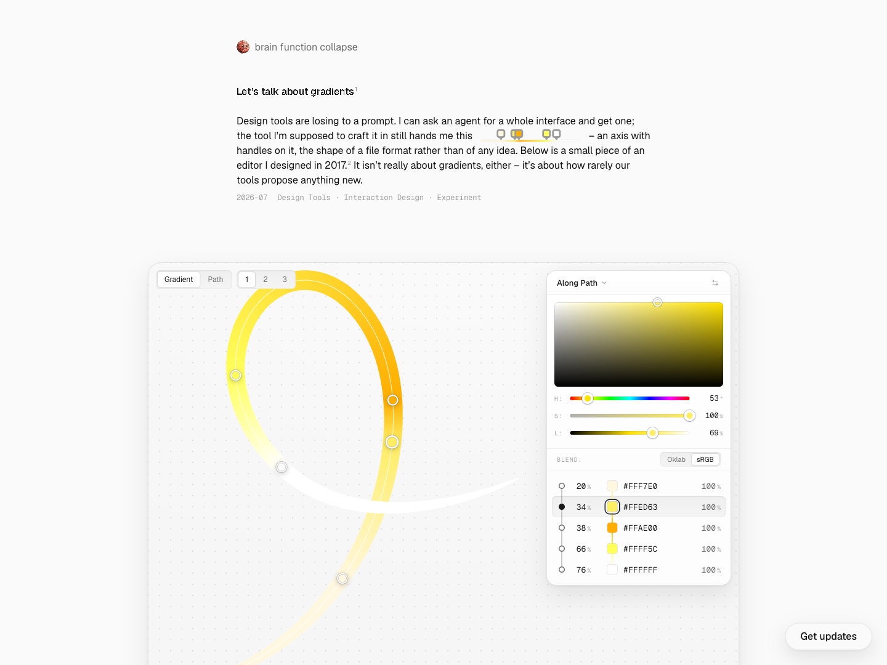
Edit the object in place
Wojciech Dobry · brain function collapseLarge handles on the artboard and a precise numerical inspector offer two ways to express the same change.
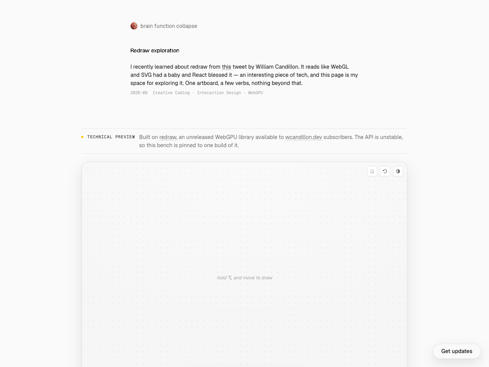
One drawing command at a time
Wojciech Dobry · brain function collapseThe page separates the command to draw from pointer movement. It labels the renderer as a technical preview and credits William Candillon.
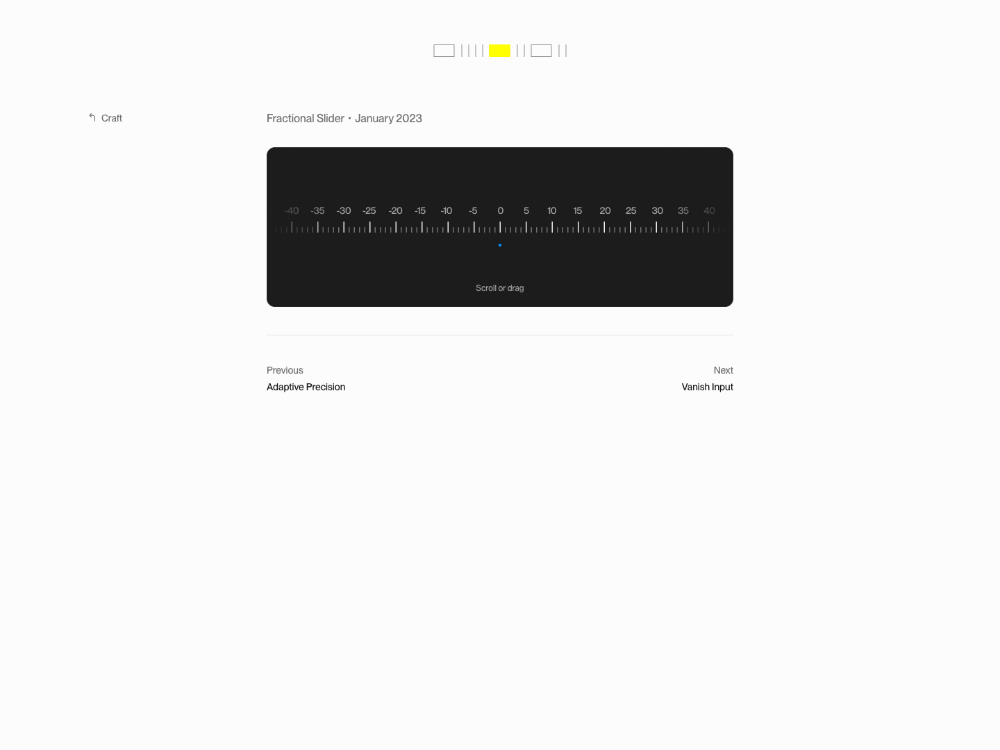
A small control can explain itself
Rauno FreibergA ruler, one instruction and immediate feedback are enough for a focused experiment. No surrounding dashboard is needed.
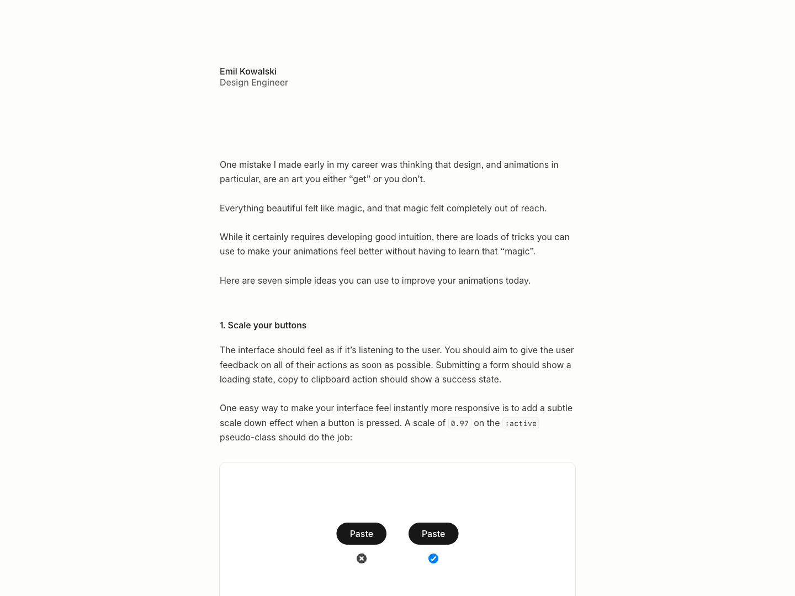
Feedback demonstrated side by side
Emil KowalskiThe pressed-button examples make the recommendation inspectable. Repeated high-frequency actions call for restraint.
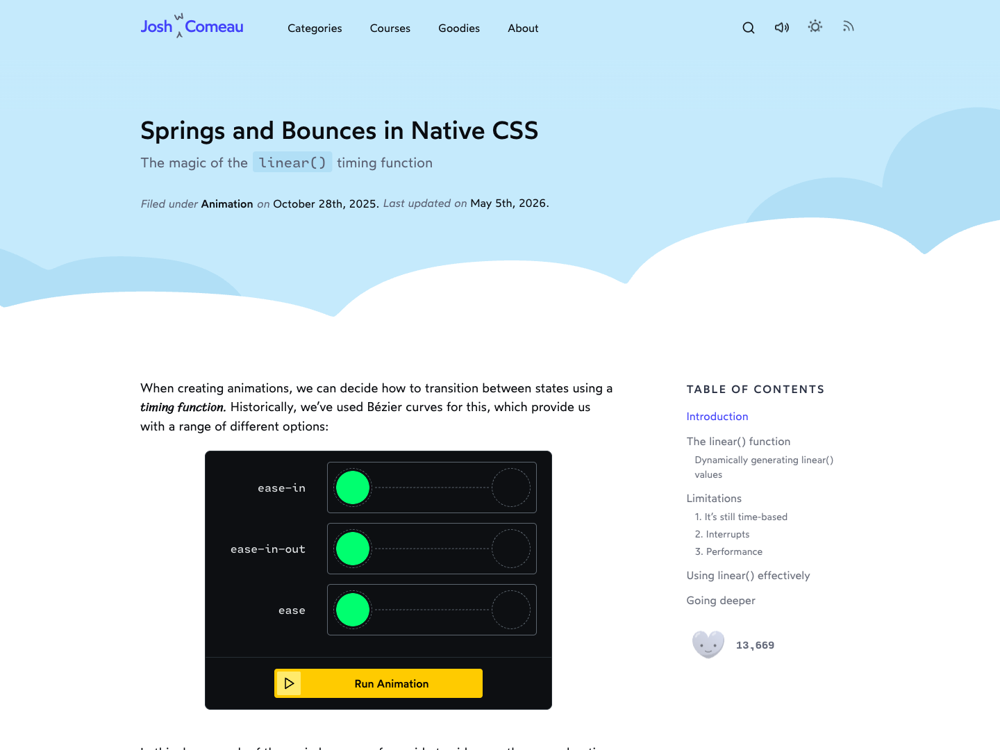
Change a parameter, see the consequence
Josh W. ComeauRunnable controls sit beside the explanation. A screenshot records layout, not the quality of the animation.
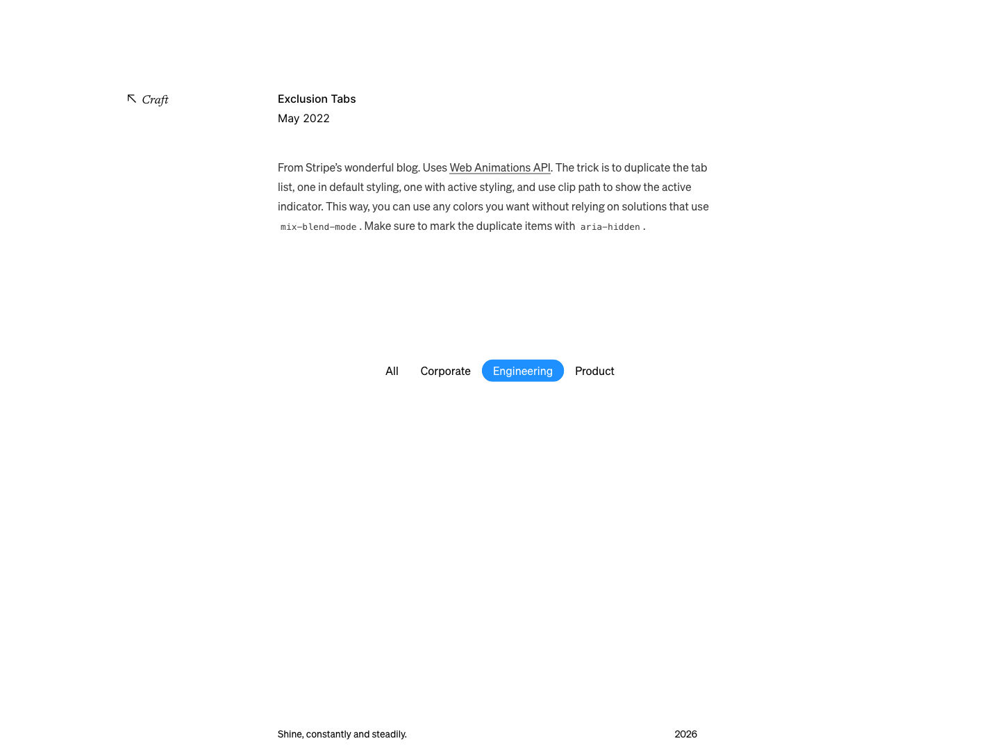
A stable place for the selected item
Paco CourseyCaptured after clicking Engineering. The original article also credits Stripe and explains its accessible duplicate presentation.
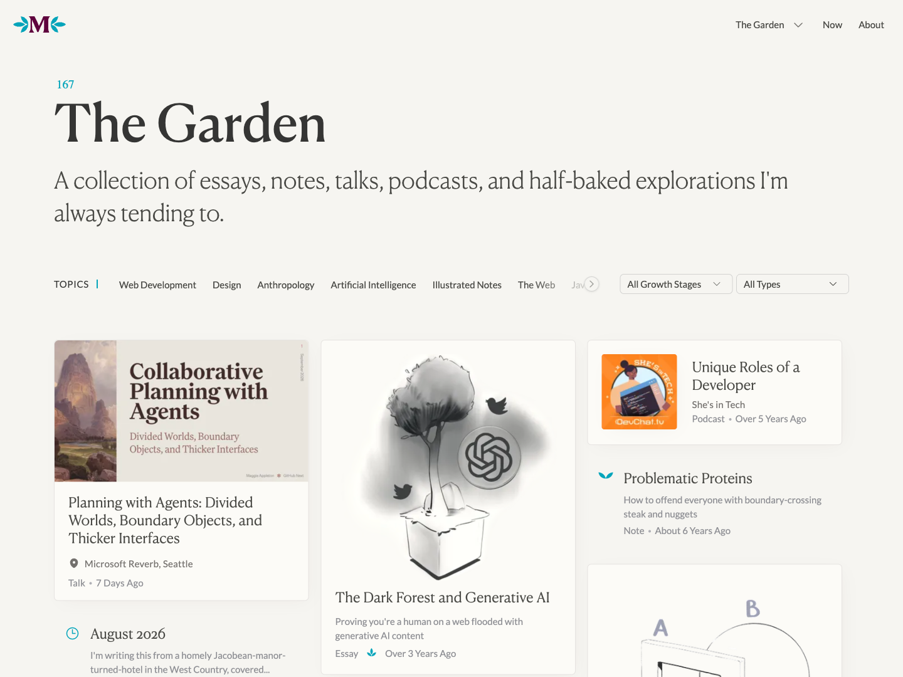
Make the maturity of work visible
Maggie AppletonGrowth stages distinguish unfinished ideas from mature work. Jev can apply that distinction to research evidence and usable scenes.
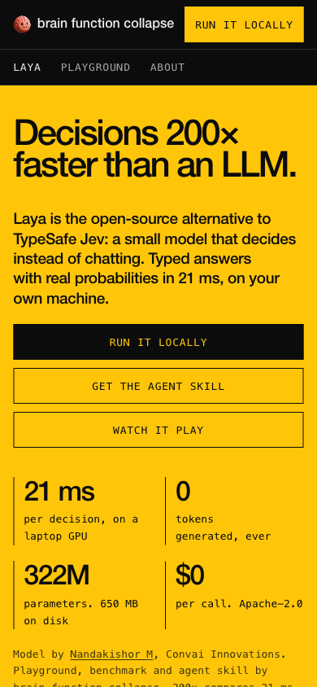
Stack the first actions on a small screen
Wojciech Dobry · brain function collapseAt 390 px the primary choices remain explicit. The mobile capture is one page state, not a full accessibility audit.